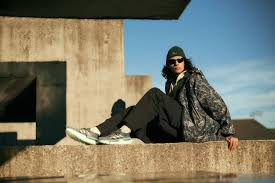
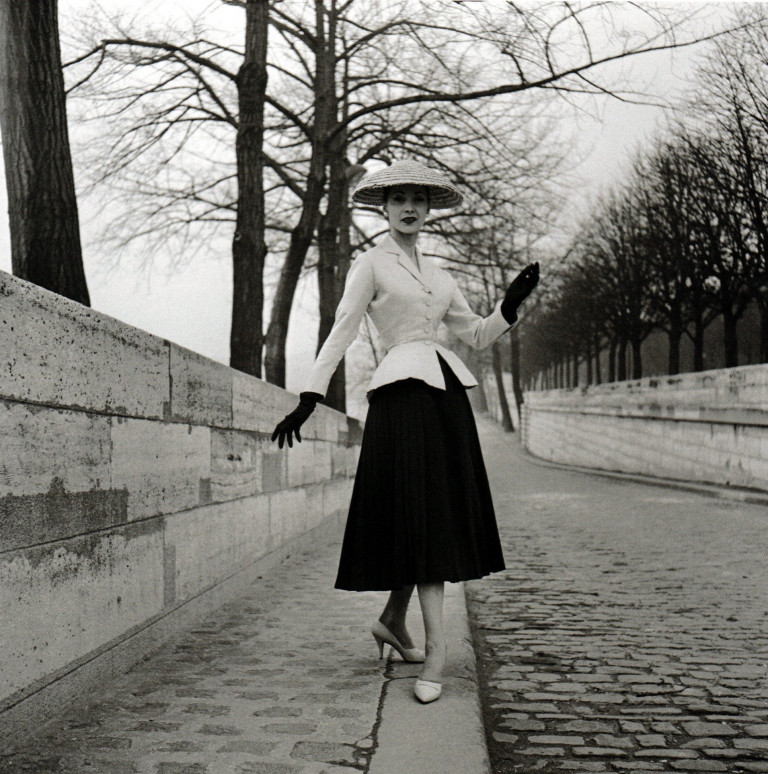
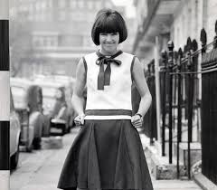
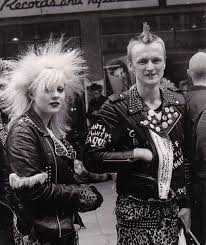
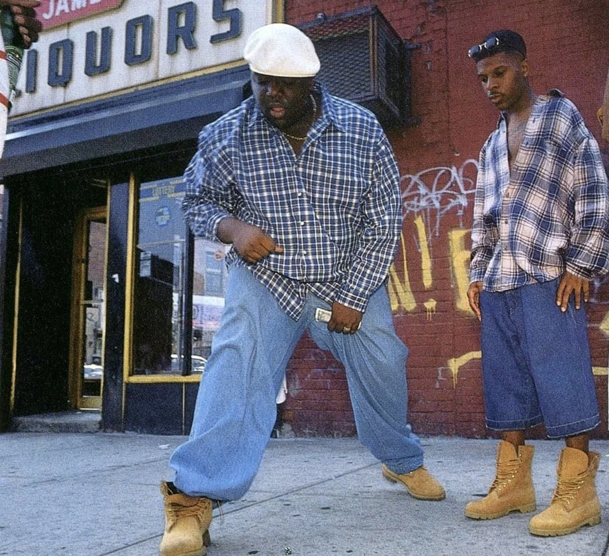

1930

Elegância e adaptação
As roupas ganharam linhas mais alongadas e elegantes. A moda refletia um período de dificuldades econômicas e mudanças no cotidiano.
De década em década, roupas e estilos revelam transformações culturais e novas maneiras de enxergar o mundo.
A moda acompanha mudanças sociais, econômicas e culturais. Ao longo do tempo, silhuetas, tecidos e maneiras de vestir registraram novas ideias sobre liberdade, trabalho, juventude e identidade.

As roupas ganharam linhas mais alongadas e elegantes. A moda refletia um período de dificuldades econômicas e mudanças no cotidiano.

Durante a Segunda Guerra, a escassez de materiais incentivou roupas funcionais e o reaproveitamento de tecidos.

Novas referências jovens ganharam força, com cores, formas geométricas e peças que rompiam convenções.

Movimentos musicais e culturais influenciaram roupas expressivas, do visual boêmio ao punk.

O grunge, o hip-hop e o streetwear ampliaram a presença da cultura urbana na moda.
A moda atual mistura referências, questiona padrões e abre espaço para diversidade e novas tecnologias.